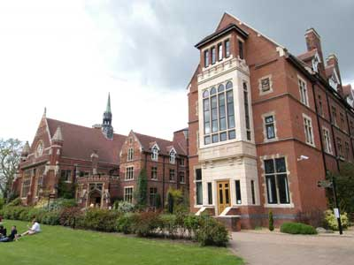

Venue
This year the conference will be held at Homerton College, CambridgeThe college provides an excellent mix of modern, high quality conference facilities and traditional architecture set in beautiful grounds.

The college is close to Cambridge railway station, the town centre and M11
For those attending the conference we have produced some Joining Instructions that include maps and driving/train directions.